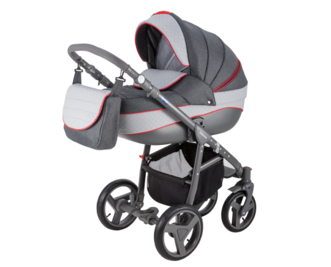

Каталог

Коляска Avanti
.png) Коляска Avanti Deluxe
Коляска Avanti Deluxe
.png) Коляска Avanti Deluxe Premium Luciano
Коляска Avanti Deluxe Premium Luciano
.png) Коляска Vicco
Коляска Vicco
.png) Коляска Marcelo
Коляска Marcelo
.png) Коляска Marcelo Carmel&Grey
Коляска Marcelo Carmel&Grey
.png) Коляска Vicco Carmel&Grey
Коляска Vicco Carmel&Grey
.png) Коляска Vicco 100% кожа
Коляска Vicco 100% кожа
.png) Коляска Young
Коляска Young
.png) Автолюлька Adamex Carlo
Автолюлька Adamex Carlo
.png) Автолюлька Adamex Kite
Автолюлька Adamex Kite
Заголовок для SEO
Adamex большое внимание уделяет внешнему виду детской коляски, чтобы прогулки были приятными не только для малыша, но и для мамы. Любая мама, выбирающая коляску, согласится, что детские коляски Adamex имеют самое большое разнообразие расцветок. Более того, с каждой новой партией появляются новые сочетания цветов Adamex большое внимание уделяет внешнему виду детской коляски, чтобы прогулки были приятными не только для малыша, но и для мамы. Любая мама, выбирающая коляску, согласится, что детские коляски Adamex имеют самое большое разнообразие расцветок. Более того, с каждой новой партией появляются новые сочетания цветов